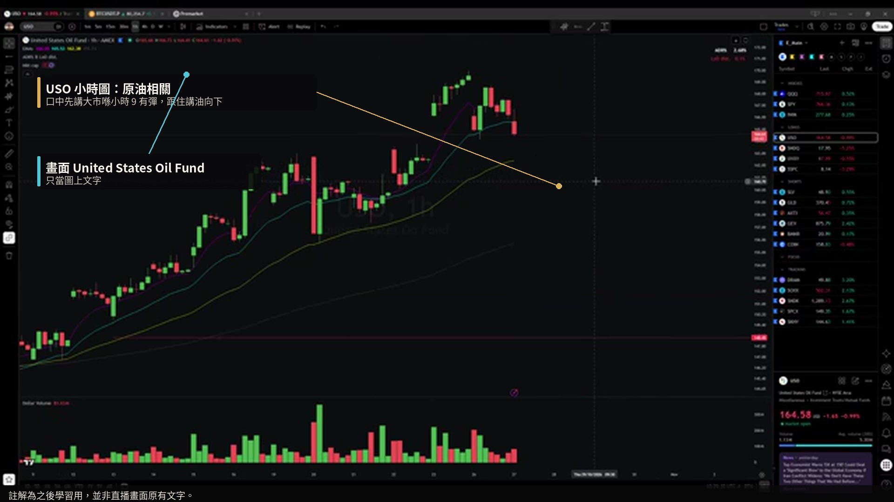
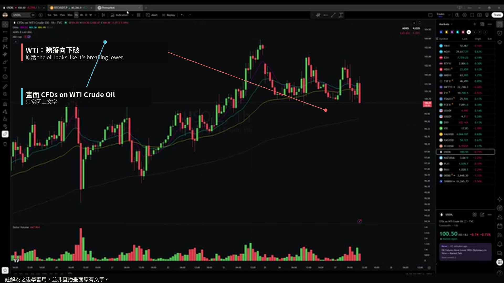

概要
講完賣出習慣，隨即掃一眼大市同油
1:09:37 佢話大市喺小時 9 有彈，而原油睇落向下破。畫面隨即見到 USO 小時圖同 WTI。Whisper 把 the market 聽成 mark，把 hourly 9 聽成 already 9。
圖一
USO 小時圖：原油相關
直播 1:09:30

原話
The market is bouncing at the hourly 9, and the oil still looks like it's breaking lower.
大市喺小時 9 有彈，而原油仍然睇落向下破。
Whisper 把 The market 聽成 mark is，把 hourly 9 聽成 already 9。對照 YouTube 字幕同語境還原，並標明。講大市小時 9 嗰陣，畫面已經開始切到原油相關品種，未另留一張同步嘅指數小時圖。
點樣讀
呢句把兩個位置並排：指數有彈，油向下。唔好把 USO 讀成大市本身。
畫面 United States Oil Fund 只當圖上文字。9 以口中為準。
圖二
WTI：睇落向下破
直播 1:10:30

點樣讀
呢張用來對口中「oil is breaking lower」。位置讀法以當時畫面同原話為準，唔另加未講過嘅目標。
畫面寫住 CFDs on WTI Crude Oil，只當圖上文字。
附註
注意事項
- 1:10:47–1:23:55 大部分時間靜音或只係講自己靜咗咪，主要係翻圖，唔做成圖冊。